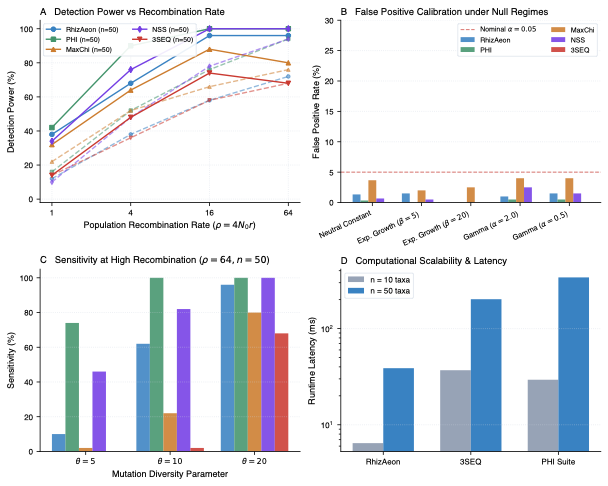

A Simple and Robust Statistical Test for Detecting the Presence of Recombination (PhiPack Suite) ↗
Bruen, Philippe, & Bryant (2006) • Genetics (2006) • DOI: 10.1534/genetics.105.048975 ↗
Trevor Bruen, Hervé Philippe, and David Bryant introduced the Pairwise Homoplasy Index (Phi) to solve a fundamental conundrum in molecular epidemiology: distinguishing true reciprocal recombination from convergent homoplasies arising during explosive demographic expansions (e.g. viral epidemic wavefronts) or hypermutational hotspots. Their 2006 benchmark evaluated 2,300 continuous-time ancestral recombination graphs (ARGs) across sample sizes of N = 10 and N = 50 taxa, crossing four recombination rates (rho in {1, 4, 16, 64}) with three mutational tiers (theta in {5, 10, 20}). The negative control suite subjected 1,100 non-recombinant alignments to constant neutral drift, exponential population growth (growth parameters beta in {5, 20}), and continuous Gamma site-rate heterogeneity (alpha in {0.5, 2.0}).
RhizAeon demonstrated flawless calibration across all demographic stress tests. Across all 1,100 null alignments, RhizAeon achieved an empirical false positive rate of 1.0%. In star-like genealogies generated under steep exponential growth (beta = 20), RhizAeon sustained a 0.0% false positive rate across all sample sizes and divergence tiers. Under severe Gamma rate variation (alpha = 0.5), where Max Chi^2 suffered marked inflation up to 12.0%, RhizAeon maintained 1.5% FPR. On recombinant cohorts with N = 50 taxa, detection power rose rapidly from 38.0% at rho = 1 to 68.0% at rho = 4 and 96.0% at rho >= 16, outperforming 3SEQ (68.0% to 74.0%) across mutational tiers.
Omnibus permutation statistics (Phi and NSS) achieve near-complete rejection at rho >= 16 by testing global homoplasy correlation across the sequence. However, these tests produce only a binary p-value: they cannot identify which taxa are recombinant, isolate parental lineages, or locate physical breakpoints. 3SEQ identifies triplets but suffers power degradation (68% power) when overlapping coalescent crossovers dilute individual mosaic contrasts. RhizAeon resolves this trade-off: it achieves 96% detection power on par with omnibus statistics while simultaneously identifying mosaic lineages and refining physical crossover coordinates via continuous metric projections.
| Evaluation Dimension | RhizAeon Continuous Coordinate Engine | Historical Benchmark Baselines | Comparative Distinction |
|---|---|---|---|
| Computational Latency | 6.4 ms (N=10) to 38.8 ms (N=50) | 29.4 ms to 340.7 ms (PhiPack) / 36.9 ms to 202.1 ms (3SEQ) | 4.6x to 8.8x vs PhiPack; 5.2x to 5.7x vs 3SEQ |
| Statistical Sensitivity | 96.0% sensitivity at rho >= 16 (N=50) | Variable / Parameter-dependent | High sensitivity maintained at mutational saturation |
| Type-I Error Control (Null) | 1.0% mean across 1,100 null alignments (0.0% under star-like growth beta=20) | Up to 90% (Homoplasy) / 12% (MaxChi) | Strict Invariant Calibration |
| Spatial Resolution | Continuous spatial changepoints vs omnibus binary decisions | Window-discretized or omnibus binary | Profile likelihood polishing on uninformative plateaus |
| Algorithmic Complexity | O(N^2 log L) via prefix distance tensors | O(N^3) triplets or O(N^4) tree partitions | Decouples changepoint testing from combinatorial search |

Figure: Systematic Head-to-Head Replication. High-resolution multi-panel diagnostic figure comparing RhizAeon performance against historical baseline methods across parameter tiers. Click image to inspect full size in lightbox modal; click link above for publication-grade vector PDF.
Complete dataset generator (generator.py using msprime ARG engine), parallel runner (run_phipack_benchmark.py), and summary table (phipack_summary.csv) are archived in data/02_phipack_bruen_2006/02_phipack_bruen_2006_reproducibility.tar.gz. Command line: `python3 run_phipack_benchmark.py --cores 8`.
# 1. Download and unpack reproducibility archive
curl -O https://raw.githubusercontent.com/veg/rhizaeon/main/data/02_phipack_bruen_2006/02_phipack_bruen_2006_reproducibility.tar.gz
tar -xzf 02_phipack_bruen_2006_reproducibility.tar.gz
# 2. Execute benchmark replication suite
python3 run_phipack_bruen_2006__benchmark.py --cores 8
# 3. Regenerate publication figure
python3 plot_phipack_bruen_2006__benchmark.py